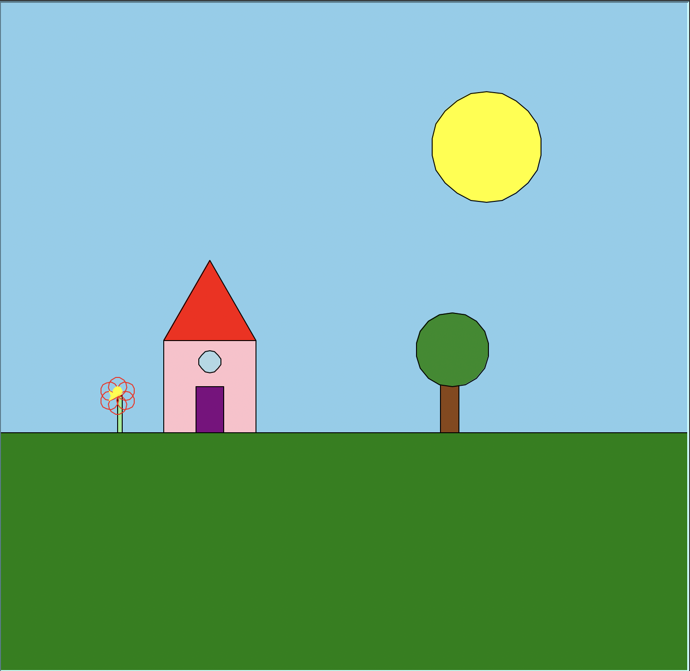

This project utilizes Python's turtle graphics library. For my first turtle project, I created a scene with small house and tree. I later learned how to expand and create more generalized and refactored code to improve this project further.
This function creates a small flower with overlappiing circles as petals. The function takes in parameters for the object, starting position, and size to allow for flexibility of size and location.:
• t: The turtle graphics object for drawing
• x, y: Starting position coordinates for the flower
• size: Scale factor (default 1.0) to make flowers larger or smaller
Here's the completed turtle graphics scene featuring my house with my small flower, a big and bright sun, and a tree:

The scene combines and utilizes various turtle graphic techniques to create a basic scene. The house incorporates rectangle, a triangle and a small circle for the window. The sun follows a similar technique to the flower, using overlapping circle to create the circle. The tree is made of a rectangle for the trunk and a circle for the leaves, using similar code and techniques to the other elements in the scene.